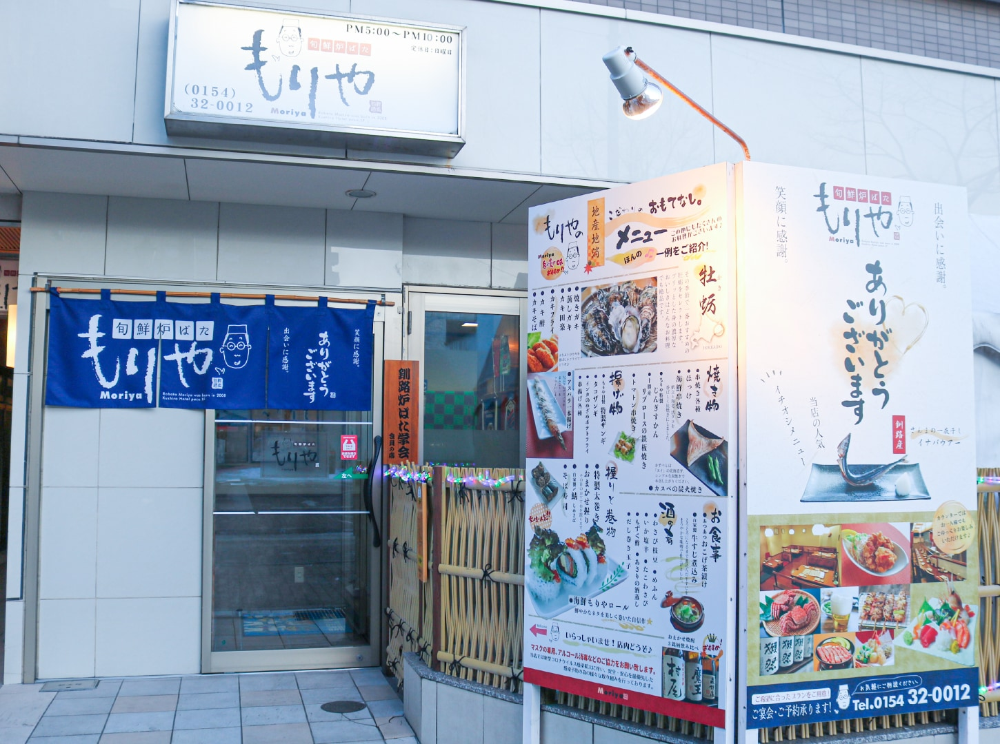
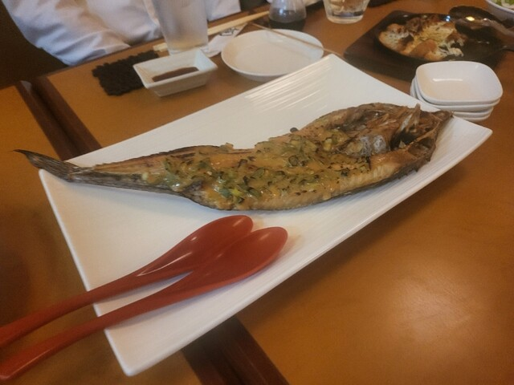
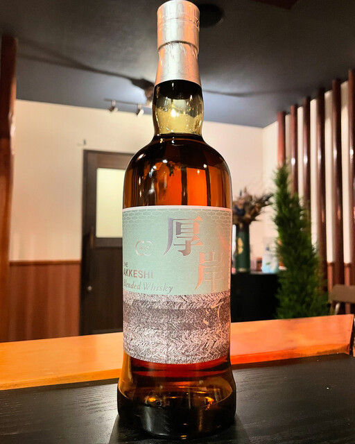

Photo Gallery
旬鮮炉ばた もりやとは
幣舞橋ほど近くのホテル1Fに構える炉端居酒屋。地球の歩き方にも掲載された釧路海鮮の名店。プリプリの牡蠣酢と大将の気さくな接客が人気。釧路産の刺身盛りはその日の漁次第で内容が変わる。
📍 北海道釧路市末広町2丁目13 ホテルグローバルビュー1F 営業時間：17:00〜22:00（L.O. 21:30） 定休日：日曜
実食レビュー
道東の鮮魚を炭火で
釧路港から直送される旬の魚介を備長炭でじっくり炙る本格炉端焼き。その日の水揚げによって変わる黒板メニューが楽しみのひとつ。牡蠣・ホッケ・シシャモ・つぶ貝など道東の恵みが一堂に会する。
カウンター席から調理の様子を眺めながら、地元の地酒「福司」や北海道限定「サッポロクラシック」と合わせる時間は格別。観光客にも地元常連にも愛される釧路炉端の文化を体験できる。
おすすめメニュー
- 牡蠣酢……厚岸産の大ぶり牡蠣をその日のうちに仕込む看板メニュー
- 釧路産刺身盛合せ……その日の水揚げによる旬の地魚を豪快に盛り合わせ
- ホッケ炉端焼き……釧路港直送のホッケをふっくら炭火焼きに
- シシャモ炙り……本シシャモのシーズンは必食
最新の営業時間・メニューは公式情報をご確認ください。
アクセス・予約
訪問のコツ
- 予約推奨。カウンター席は早めに埋まります
- 地酒「福司」や「男山」との相性が抜群
- 旬の食材は季節によって変わるのでメニューをよく確認して